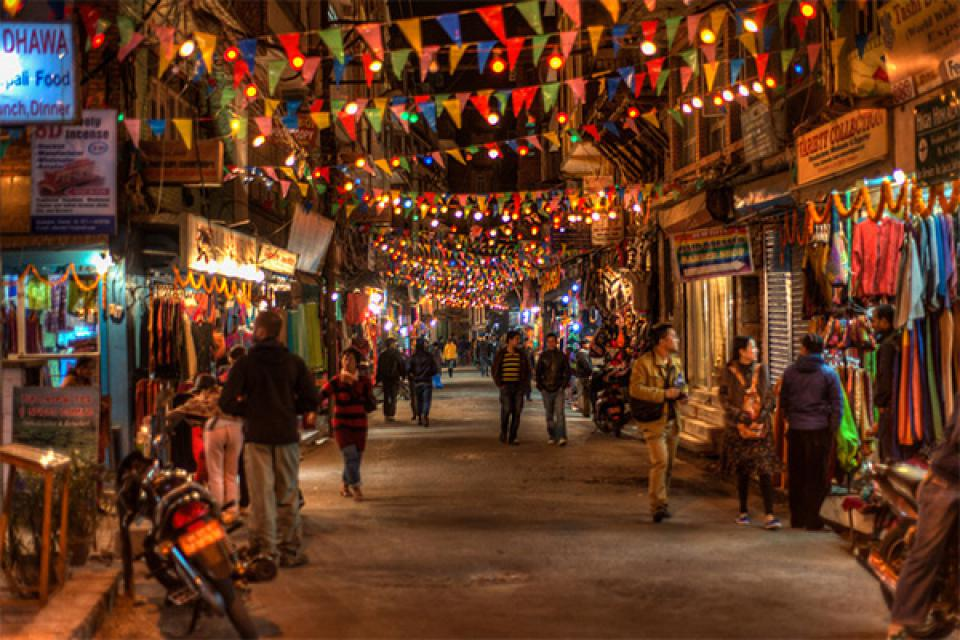
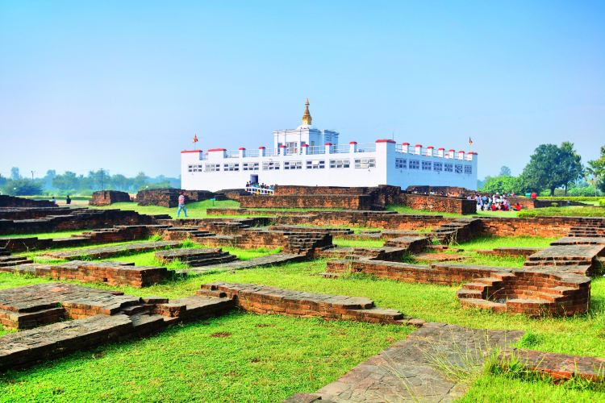

Explore Nepal
The main attractions of a country are its destinations.With being a country of a rich heritage and natural beauty, Nepal
is home to some of the most beautiful, spiritual and
memorable sites. There are a few reasons people visit Nepal, some are
adventurous and want to summit Everst, others are drawn by the culture and history, while some are
seeking spiritual awakening.
No matter the reason, you are guaranteed to leave with life long memories and stories that will be remineesed for years to
come.The destinations
listed below are cities that define Nepal and showcase the true essence of Nepal.

Kathmandu
We begin our journey from the capital, Kathmandu. With a population of around 2.5 million it
is the largest and fastest
growing city in the country.The city is also referred to as the “heart
of the nation”, due to its historical, economic and
cultural significance in the nation. This also
explains its increasing growth rate year over year with people from all around
the country
moving here for a better life. When you first visit Kathmandu, you will notice that it
is surrounded by hills that
give it a “Bowl-shape” look. This is evident as thousands of
years ago,Kathmandu valley was a massive lake that inevitably
drained out. With over
300 monasteries, temples and monuments to visit, you will not run out of things to explore
in the
Kathmandu valley.
Some notable places to visit in Kathmandu are:
- Swayambhunath
- Thamel Bazar
- Chandragiri hills
- Boudhanath stupa

Pokhara
The next destination on our list is Pokhara. Only a 20 minute flight from Kathmandu, Pokhara
is the second largest city in
Nepal with a population of over 500 thousand. Located in Kaski
district, it sits on the shores of Phewa lake.Renowned for
its magnificent landscapes, Pokara is
the most highly rated tourist destination of Nepal.Tourists’ love for Pokhara is seen
in the city
economically as well, as 58% of the city’s economic activity occurs in tourism and the service
sector.Many
tourists visit the city for trekking, rafting, paragliding and bungee jumping.It is also
one of the best places for people
looking to rejuvenate your mind and body.
Some notable places to visit in Kathmandu are:
- Davi’s Falls
- Phewa Lake
- World peace pagoda
- Gupteshwor Mahadev Cave

Lumbini
The next destination on the list is the most sacred destination in Nepal, Lumbini. Lumbini is
the birthplace of the Budda,
born around 563 BCE.Lumbini was also inscribed on UNESCO's
World Heritage List in 1997, due to its religions and
archaeological remains. It is also a natural
place of pilgrimage for Buddhist all around the world due to its significance.
Through the area,
remains of the once palace have been preserved and the exact place of birth is also
marked.Many who've
visited the exact birthplace have experienced a sense of calmness and
peace indescribable of words.It is one of the holiest
places in the world and a must visit for
spiritual people.
Some notable places to visit in Lumbini are:
- Maya Devi temple
- Ashokan pillar.
- Lumbini Museum
- Myanmar Golden Temple.